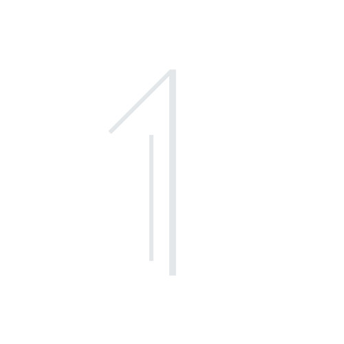

Evan Butler is a contemporary artist. Without formal training in the fine arts, Butler has developed a multidisciplinary practice spanning painting, digital media, animation, and three-dimensional design. One of the few members of his family to pursue an artistic practice, he has cultivated an independent artistic voice through self-directed study and experimentation.
Late 2022 marked Butler's emergence as an artist working across both traditional and digital painting. Throughout 2023, he expanded his practice into 3D design and animation, developing an experimental animated short film, Untitled (2025), which was completed in 2026 for the Propitiation exhibition.
During the summer of 2023, Butler began work on the animated short film 丹碧竹 (Tanpekidake) while also producing Untitled (2023), one of his earliest major paintings.
In early 2024, Butler's practice entered a period of conceptual development. Moving fluidly between media, his work increasingly resisted a fixed visual style, instead pursuing recurring ideas through continually changing forms. During this period, he also explored artificial intelligence as both a conceptual and technical framework, informing his artistic and academic trajectory prior to enrolling in the A.I. Systems course at the Tokyo Institute of Technology.
Toward the end of 2024, Butler paused his artistic practice following relocation to New Jersey under precarious living conditions. A year and a half later Butler returned from his hiatus.
In June 2026, Butler began development on his first solo exhibition, The Atelier/Propitiation.
